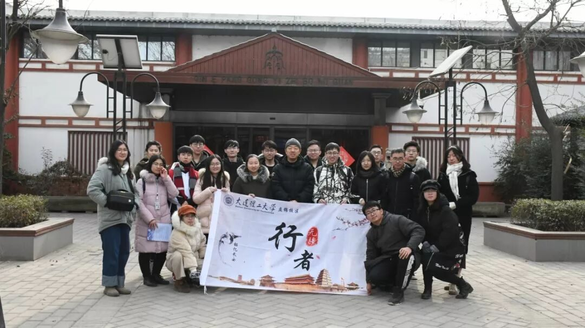
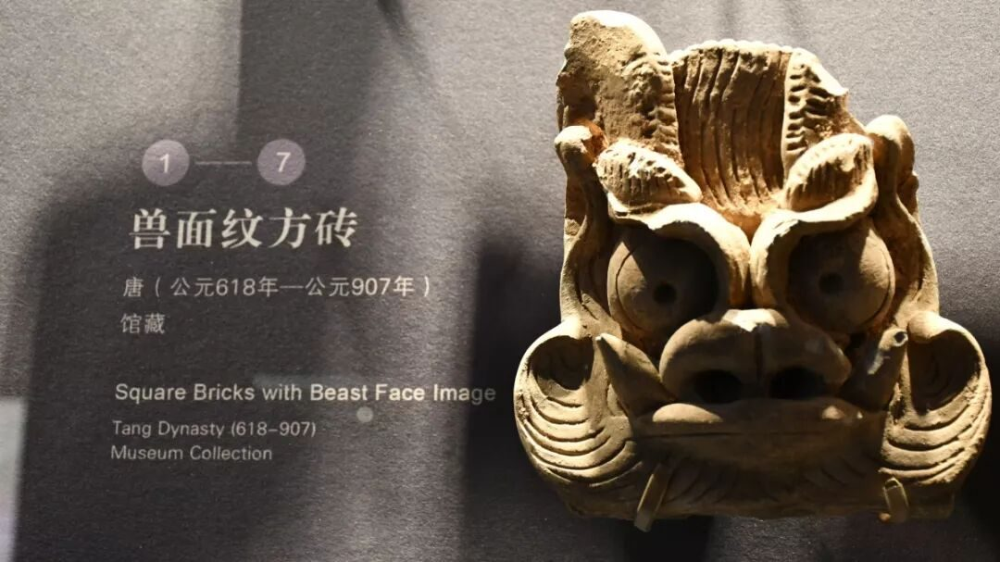
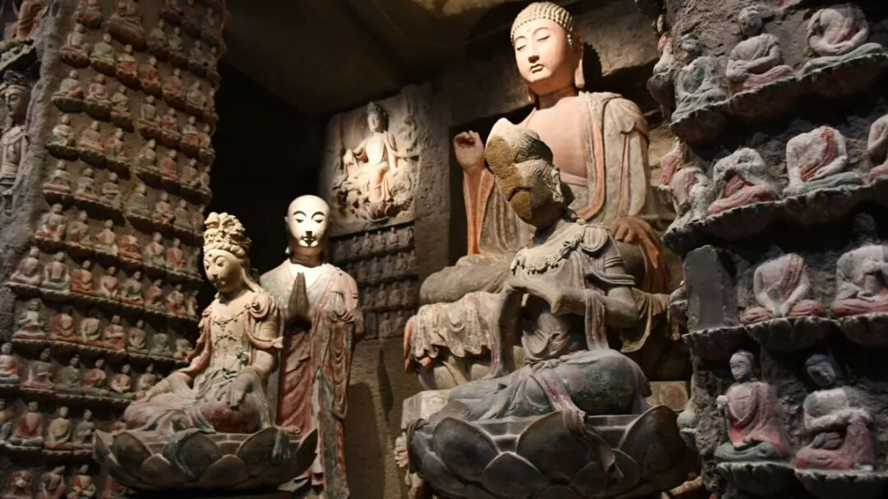
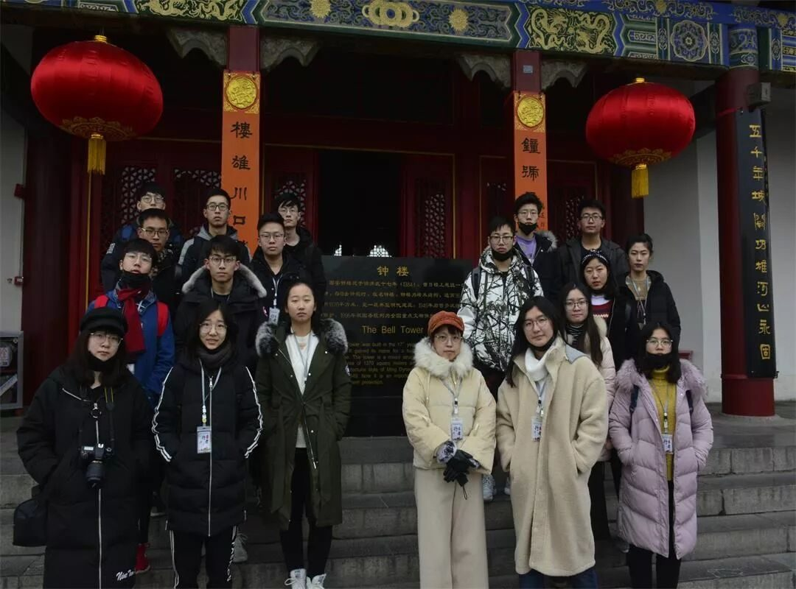

【秦简拓语 · 四】烛火照明，泥步修行

愿中国青年都摆脱冷气，只是向上走，不必听自暴自弃者流的话。能做事的做事，能发声的发声。有一分热，发一分光。就令萤火一般，也可以在黑暗里发一点光，不必等候炬火。
——鲁迅我们是昨天和今天的行者，徘徊于文明往昔，惆怅于传承之未来，脱离自己成长的温室，去往一座座陌生的城市，领受漫长而又陌生的研途。我们走的太长，太久，记忆不牢靠，口舌易含混，便将所有付诸笔下吧，可佐证记忆，亦充作札记，供数载后回首。
终会有这样一天，我将永远离开，一切归宿于黄土，时间模糊掉我所有生活的痕迹，仅剩博物馆里的一些古物，于是这成了还原我生活的最佳凭证，一如我们不曾亲眼目睹千百年前的古人生活，却在讲解员的讲述中，回味了他的一生。

博物馆是对人类存在，文明诞生的收录，历史的厚重与淡然皆收归于此，每一次流连期间，都仿佛开胸扩脑，淘换干净都市的喧嚣，一股脑地灌下历史的风尘悲歌。宗周礼乐，汉唐诗篇 ，唯有这里得以真正窥见其风采。
杜牧的《阿房赋》为我们描绘了富丽堂皇的阿房宫，谁不曾叹惋楚人的大火，但实地走访方知，阿房从未建起，仅有地基留存。诗人的浪漫留下多少误传，艺术与真实的历史终究不能混为一谈。

我们想要保护的并非死物，而是真实的历史，正确的观念，我们希望所有人面对文明的火种三思而后行，不要等到古物被破坏才想到修复，已见塔楼倾毁，才知修缮。现今博物馆文创行业如火如荼，遗址类公园景区开发遍地开花，但似乎总有人走错了路，总是忙着装扮，于是真旧址成了假遗迹，古文物误认成新雕塑，文化有了新的谬传。
我们也必须承认，毕竟是未曾涉足过的城市，在7天的行程里，每一天都可能遭逢意外，调研记录下不少故事，一起又面临许许多多的难题；但每次出发前，我们都做足了精神与文明的双重储备。
我们不敢掩饰自己的无知与蒙昧，但从未放弃对于未知的探索，行至一城，便了解一城的文化，是职责亦是信念。每一次调研亦是一场修行，修心亦修性，如诗岁月，遥赴万里，不负行者之名。

对于这个世界，我们终究知之甚少，对于未曾探访过的文化，我们始终对心存敬畏，悬念与留白，使我们的人生不断迸发新的乐趣，鼓动我们前行。行者无疆，所行之路，永远是一个进程，而没有尽头。
来源丨行者无疆实践团
文字丨潘雯雯
排版丨牛直达
审核丨潘雯雯 邓子孚
行者无疆实践团
QQ：2758025831
随行者一起认识世界
长按二维码关注